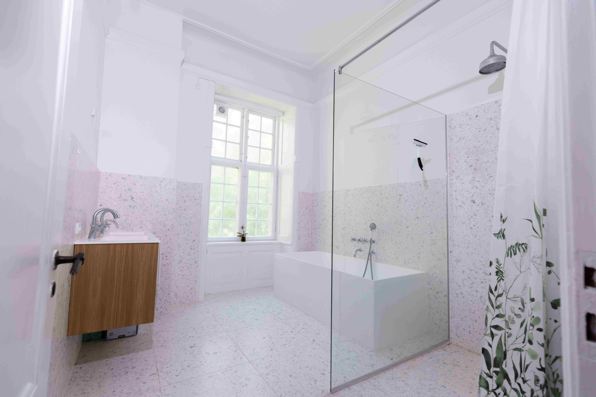
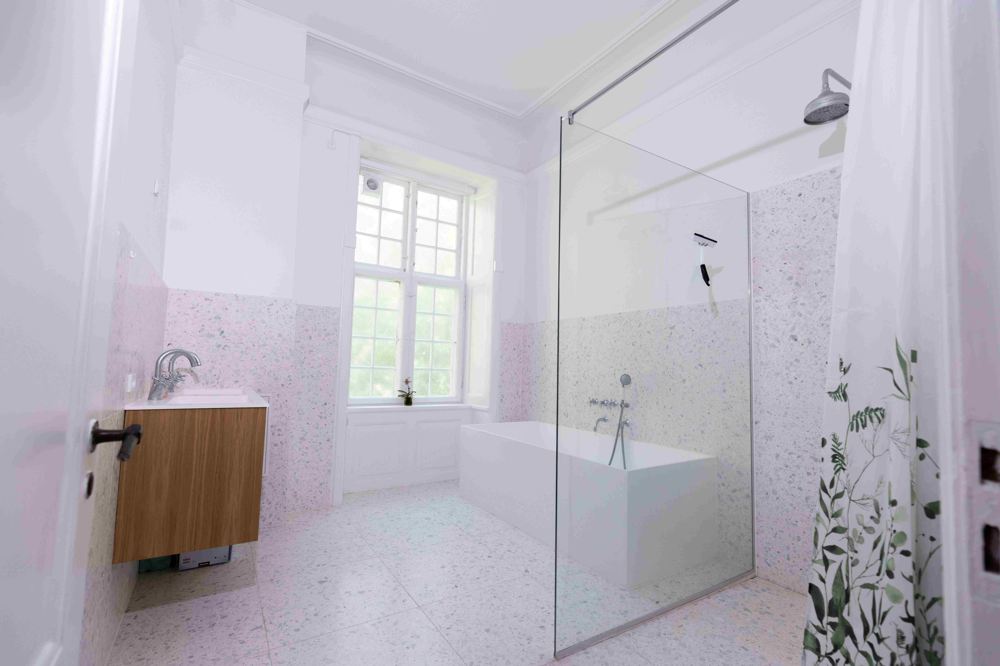
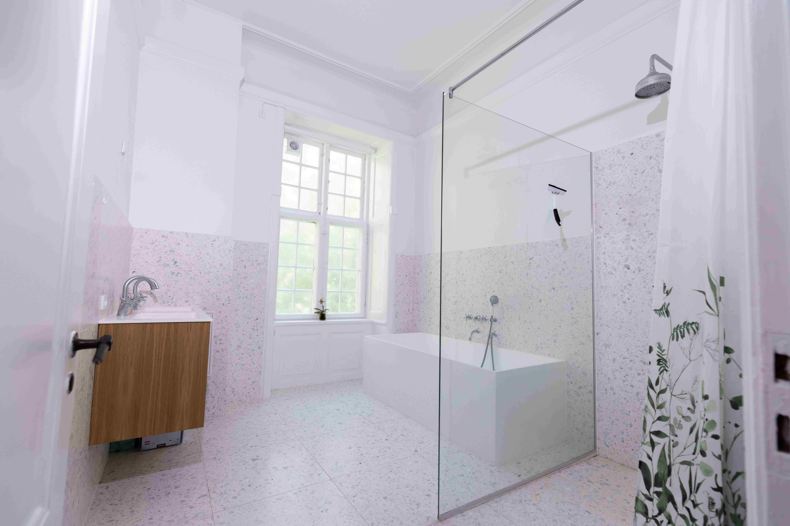
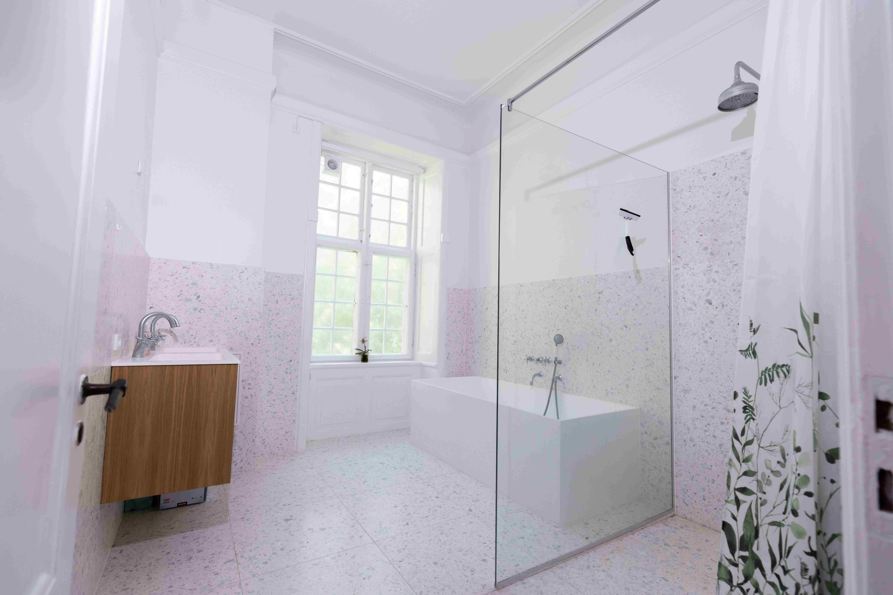

Spanning 455 square meters, this remarkable residence offers a rare sense of volume and light. Soaring ceilings and expansive floor-to-ceiling windows create an atmosphere of openness, allowing natural light to flow effortlessly through every space. Throughout the home, intricate wall paneling and expansive ceiling mouldings have been beautifully preserved, adding depth, character, and a sense of quiet grandeur. These architectural details frame each room with refined elegance, while classic herringbone hardwood floors add warmth, texture, and timeless appeal – lending the apartment a truly distinctive and luxurious atmosphere. Every element has been thoughtfully curated – from bespoke cabinetry and hand-selected tiles to the premium kitchen, outfitted with Miele appliances and an induction cooktop. The master suite is a private sanctuary, complete with a generous walk-in closet, a sleek rain shower, and a freestanding bathtub — an understated indulgence that elevates everyday living. This is more than a home; it’s an invitation to live with intention, beauty, and comfort at an extraordinary scale.